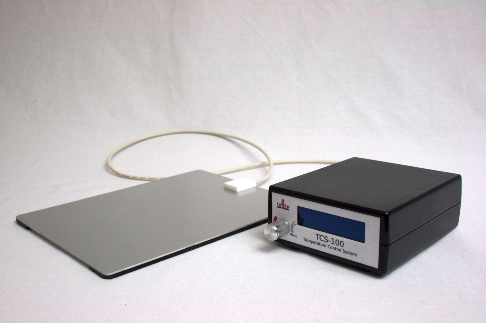

Heater Controller
This project required the development of a controller as well as accompanying heating elements. The main application for the controller was for it to be used as a heating bed for a rodent while the animal was under anesthesia and being operated on. For this application it was critical the heating bed was not emitting any electromagnetic interference to the ECG system that would be monitoring the rodent’s vital signs during surgery.
I mapped out the desired functionality with the design limitations in mind to get a rough idea of what I would need on the hardware side of things to accomplish what I wanted. For the rodent heating bed application, a thermocouple would need to be implemented for rectal monitoring and as a feedback element for the heater. I decided I would have a thermistor on both heating elements to prevent the elements from overheating and would use the thermocouple as the feedback element if it was plugged in. For heat output and thermistor input connector I decided to use a 4 pin XLR connector. I knew that the robustness of the connector and the physically larger size would keep electrical parasitics lower than some of the smaller connectors. The last connector I would need was an analog output for temperature. The only things left to add were a power connector and a switch. Once I had a pretty good idea of which connectors, I would need I placed them on a PCB template I made to fit the box I was using. From here I could export the PCB and place it into the enclosure I modeled in FreeCAD. This allowed me to see how the pieces would fit together and prevent any unnecessary blunders in layout.
I was also responsible for creating the overlays for the controller. For the prototype, I used a hobby grade vinyl cutter and a sheet of adhesive backed vinyl laminated with a clear adhesive backed sheet to give a nicer look. Once I had the aesthetic and implementation of the interconnects completed, I needed to get started on the PCB design. I considered putting together my own thermocouple circuit, but the cost of the components necessary in a low production environment wasn’t justifiable over the simplicity and reliability of a single chip solution with cold-junction compensation, PGA, and an ADC to output the temperature to the microcontroller.
The user interface (UI) consisted of an encoder with an integrated push-button and OLED display. The display was straightforward in its implementation. I used a 128x32 display with a Chip on Glass (COG) controller which greatly simplified the design. I gave it its own SPI bus and only needed to add a 12V supply for the backlight. The encoder outputs were filtered with an RC low pass filter to increase signal integrity.
The next device that needed to be implemented was the analog output. I considered doing the classic low pass filtered PWM DAC but found the resolution inadequate. I decided to go with a simple cost-optimized 12-bit DAC which I was able to add on to the same SPI bus as the thermocouple IC. The thermocouple chip I chose was capable of heavily oversampling the signal before transmitting it on the bus such that it output a 24-bit temperature value only every 250ms which gave me ample time to set the DAC at regular intervals in between. I ended up having some grounding issues with this, which I will discuss in the next section.
The final and most important part of the design was the heating controller. I decided to go with a buck topology controlled by a PWM channel on the microcontroller. The duty cycle was set by the error in the desired and measured temperature with weight given to the proportionate, integral, and derivative (PID) components. I was able to use a handful of discrete components to drive the gate of the MOSFET to keep cost low with a slight hit to design and troubleshooting simplicity.
In the first revision I applied what I thought was a liberal number of capacitors across the output and input of the converter, but found an unsuitable amount of ground bounce was causing ground loop issues at the analog output. On the next revision I added some larger electrolytic capacitors to the source and drain of the MOSFET which considerably reduced ground noise and DC bias to an acceptable tolerance. I also added some components to galvanically and capacitively isolate the analog output should I find it necessary, though I ended up not needing it.
While I waited for the PCBs to come back from the manufacturer I got started on the firmware. I was able to get a decent amount of firmware written before the hardware arrived. The display was only 128x32 pixels, so the 16-byte FIFO buffer built into the SPI module of the microcontroller was satisfactory for my purposes. An interrupt routine was configured to load the FIFO from a global 4096-byte buffer until the entire image was sent to the display. For the thermocouple acquisition I decided to go with a polled approach. As it had a dedicated pin for when data was ready, the implementation was straight forward. I did the same for the encoder and implemented a software debounce to prevent false positives. I kept the UI as simple and functional as I could. I wrote some primitive display functions to get me started and built it up from there. I added a notification scheme which allowed me to fill in the parts that were not as intuitive as well as provide useful information to the user when necessary. I programmed some calibration routines to correct for cold-junction offset in the thermocouple as well as DC offset on the analog output. This was put in the software to eliminate offset at both the equipment side as well as the device used for measuring the output.
I considered the heating element to be the simplest part of the design and figured I could just buy one off the shelf. As I began researching suppliers I found the price tag of even non-custom heating elements unjustifiable. The first thing I thought of was the heated beds on 3D printers which use a PCB as a resistive heating element. I wanted to make something that was more suited to my application and ended up discovering aluminum PCBs were exactly what I was looking for. I could ground the aluminum top to effectively prevent any electromagnetic interference (EMI) from interacting with ECG measurement. The only thing I needed to add was a strain relief which also acted as the housing for the thermistor. I ended up designing a simple Delrin mold which clamped around the PCB. The mold was filled with a urethane and cured overnight. There was a bit of experimentation in figuring out the correct process to get rid of bubbles in the urethane. The viscosity was very low so bubbles would rise to the top somewhat naturally. I ran a channel from the fill port to the bottom of the mold so I could fill it from the bottom and avoid trapping air during injection. I cured it in a pressure chamber overnight and was happy with the results. I anodized the PCB to give the heating bed a hardened and aesthetically pleasing finish.